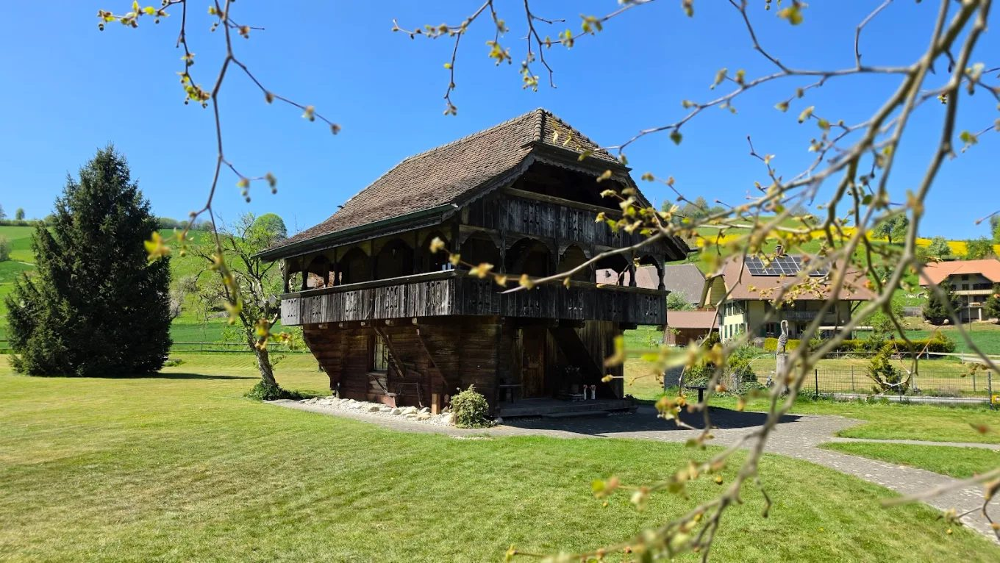

Ausgewähltes Gilde-Restaurant
Mit dem Oldtimer zur Hirsere (Landgasthof Hirsernbad), Ursenbach
Durch die Hügellandschaft des Emmentals führt die Ausfahrt zur Hirsere in Ursenbach. Entspannt auf dem Beifahrerplatz unterwegs, erwartet Sie dort ein ausgewählter Landgasthof zum Mittagessen.

Die Strecke
| Ab Thun, Rathausplatz | ca. 75 Min. Fahrzeit · Abfahrt 10:15 Uhr · Unkostenbeitrag CHF 510.– (3 Std. Fahrzeit hin und zurück) |
|---|---|
| Ab Bern, Hotel Bellevue Palace | ca. 60 Min. Fahrzeit · Abfahrt 10:30 Uhr · Unkostenbeitrag CHF 340.– (2 Std. Fahrzeit hin und zurück) |
Das Restaurant
Die Hirsere liegt in einem ruhigen Seitental zwischen Langenthal und Huttwil. Seit drei Generationen bewirtet hier die Familie Duss ihre Gäste: Roger Duss führt die Küche, Esther Duss ist die Gastgeberin. Mit Steven Duss-Selzer und Rahel Schmutz arbeitet die nächste Generation bereits mit.
Gekocht wird regional, mit Produkten aus der Nachbarschaft: Emmentaler und Butter von der Käserei Ursenbach, Gemüse und Salat vom Mattenhof, Eier aus dem Dorf, Forellen aus Kräiligen. Brot, Zopf, Desserts und Glace macht das Haus selbst. Man sitzt in der gemütlichen Gaststube oder in einem der Stübli, im Sommer auf der Gartenterrasse unter schattigen Bäumen.
Ein Blickfang ist der Spycher, ein alter Berner Speicher neben dem Gasthof. Für uns ist die Hirsere die grosse Runde durchs Emmental mit viel Landschaft unterwegs.

Steckbrief
| Adresse | Hirsern 102, 4937 Ursenbach |
|---|---|
| Website | www.hirsernbad.ch |
| Telefon | +41 62 965 32 56 |
| Ruhetage | Dienstag und Mittwoch |
| Freitags geöffnet | Ja |
Ernährung & Zugang
| Vegan | Auf Anfrage |
|---|---|
| Vegetarisch | Auf Anfrage |
| Glutenfrei | Auf Anfrage |
| Laktosefrei | Auf Anfrage |
| Rollstuhlgängig | Ja |
Angaben laut Restaurant, Stand: November 2026
Ausfahrt zur Hirsere anfragen
Dieses Ziel ist im Konfigurator direkt für Sie vorausgewählt.
Gut zu wissen
Fragen zum Ziel Hirsere
Hat die Hirsere am Freitag zum Mittagessen geöffnet?
Ja. Die regulären Ruhetage sind Dienstag und Mittwoch; freitags ist das Restaurant geöffnet.
Sind vegetarische, vegane oder glutenfreie Gerichte in der Hirsere möglich?
Glutenfreie und laktosefreie Gerichte bereitet die Hirsere auf Anfrage zu. Vermerken Sie Ihre Wünsche direkt bei der Anfrage im Konfigurator – wir klären diese vorab mit dem Restaurant.
Wie hoch ist der Unkostenbeitrag für die Ausfahrt zur Hirsere?
Der Unkostenbeitrag beträgt CHF 170 pro Stunde Fahrzeit (Hin- und Rückfahrt), ab 1 Stunde. Die Zeit im Restaurant wird nicht verrechnet. Das Essen ist nicht inbegriffen: Sie bestellen und bezahlen direkt im Restaurant.